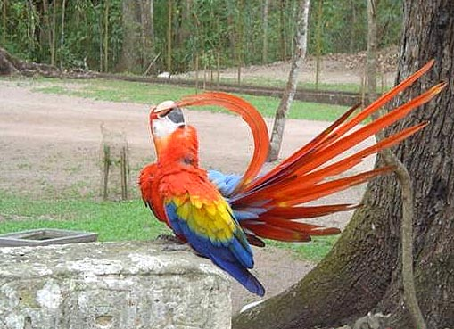
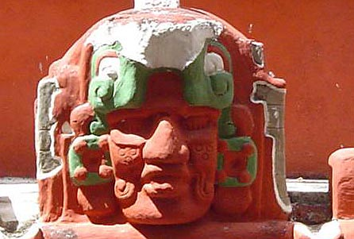

| Home / Dive Resorts / Live-Aboards / Snorkeling / Who We Are / Book a Trip |
HONDURAS HIGHLANDS, ANCIENT MAYAN RUINS at COPAN:
[Package prices subject to possible change if Honduran taxes & fuel costs rise. Your meals on the road & tips to guides are extra cost + any additional side tours you wish to try, on spur of the moment outside your established itinerary.]
Following are prices for the U. S. Dive Travel's Honduras eco-tours (via Mayan Caribbean Guides) to the Copan Ruins -- for 3 days & 2 nights -- which start at San Pedro Sula Airport in mainland Honduras. All Copan Ruins tour packages include the full-time services of a skilled bilingual chauffeur & tour guide + all land transportation to & from the airport, Copan village & the Mayan Copan ruins, including Las Sepulturas, in an air-conditioned bus or van + breakfast in Copan village each day there + all national park fees & museum entry fees at Copan (except one park-gate fee paid down there) + 1st night a double-occupancy room at the beautiful Hotel Marina Copan + 2nd night a double-occupancy room at the Gran Hotel Sula in San Pedro. Honduran sales tax (16 %) is extra, as are drinks & sundries. Clients for all Honduras eco-tours purchase their own meals on the road to the Copan Ruins, en route back to San Pedro Sula from Copan, & in Copan, except for the one complimentary breakfast at Hotel Marina Copan.
PACKAGE PRICES for 3 DAY / 2 NIGHT TOURS:
We've kept the base rate of USD $297 + fed sales tax + tariff; unchanged for years !
All tour prices subject to possible changes during peak tourism seasons,
as local Honduran service providers adjust to currency flux & tax hikes.
Note: a reasonable fuel surcharge applies for Copan tours starting in La Ceiba,
the north-coastal village that serves as the island's commuter-airline hub.
|
 |
 |
COPAN RUINS TOUR ITINERARY:
DAY ONE:
If your tour starts with 7 nights on Guanaja island (for diving or snorkeling), you'll eave Guanaja about 10 a.m. & fly via small commuter
aircraft to the mainland, arriving in the quaint coastal village of La Ceiba about 10:40 am. Our driver meets you for the 2.5-hour (beautiful!) scenic drive back to San Pedro Sula, then another leisurely 3 hours up to the highlands & Copan village. If you choose to start your vacation in Copan, then you'll
be met at the San Pedro Sula airport (SAP) by our skilled & personable overland chauffeurs,
who'll provide you with air-conditioned vans for transport up into the
mountainous country of the world-famous Copan Ruins. This village is the true soul of Honduras eco-tours.
This Copan Ruins adventure is not a ho-hum hand-held touristy trip. Rather, your guide is a low-key & cordial young Honduran man with detailed knowledge of his Mayan ancestors & their great city. He will make you feel like a couple friends on a casual weekend outing. There's no busload of fussy overbearing turistas to contend with, none of those Bermuda short & loud 'T' shirt clichés. This Copan Ruins adventure is fun, relaxing & informative. In short, it is the sine qua non of Honduras eco-tours . Don't worry about the banana republic images of Central America that you see in action movies. Honduras is the safest country in Central America for tourists to enjoy. We've spent a lot of time there & will vouch for your security. Our Copan tours company, based in San Pedro Sula, is run by a close personal friend of the U.S. Dive Travel owners; & his staff are wonderful people who will treat you like family. They know the Mayan ruins of Copan like we know our car keys.
On Day One you'll have lunch at a splendid little oasis midway between San Pedro & Copan, where you can browse through a colorful farmer's market & buy extra snacks for the road -- fresh fruits, pastries & cool refreshments. After a ride of less than 4 hours you'll be up in the cooler mountains, where the fresh, floral-scented air will invigorate you.
You'll check into Hotel Marina Copan, then head out to visit Copan's main Ceremonial Grounds, where you'll be thrilled by the huge sandstone statues called Stellae, & the pyramids, then the Copan Coliseum where warriors played a deadly medicine-ball game before cheering thousands, & many other architectural marvels among these magnificent Mayan ruins that will keep your camera blazing away. Copan is the heart of Honduras eco-tourism. These Honduras mainland Copan tours are not to be missed.
Building more than a square mile of towering pyramids, an athletic stadium, ornate homes, courtyards & palaces, the Mayans of Copan thrived for more than eight centuries, ruling what was then the cultural & religious nerve center of the Mayan Civilization in all of Meso-America. The Mayans of Copan developed exquisitely complex statuary, precise astronomy & mathematics, wondrous architecture & elaborate religious rites. Then these industrious Mayan people vanished mysteriously some time between the year 1,000 & 1,200 A.D. Copan slowly decayed into ruins. The story of their 17 dynasties & their Mayan god-kings, & how scientists believe this culture was wiped out, is one of the most dramatic tales in the annals of Western anthropology.
After a great afternoon of photos & mellow hiking around Copan, you'll have an early supper at a local bistro in the village of Ruinas Copan, where you'll sample delicious authentic Honduran cuisine. Your evening is free to enjoy drinks at the Hotel Marina Copan, or to tour the old-fashioned city & sample local cantinas.
DAY TWO:
The visual treats & the adventure does not end yet. There's much more !
Your Mayan Caribbean Tours guide also will take you to the ancient village next door to Copan's main ruins, called
Las Sepulturas, where the Mayan high priest & royalty kept their homes.
The intricacy of the stone work, & the floor plans, is fascinating.
The Copan Mayans also buried their dead in rock catacombs directly under their
family dwellings. You actually can peer down into these eerie crypts, named Las Sepulturas.
For a nominal extra fee, those folks who so desire can take a guided horseback tour of the verdant hillsides above & around Copan. Most people elect to follow the guide to a small local museum, a relic repository where you can see ancient jewelry, artifacts, mummies & archeological treasures -- nearly one millennium old. By late morning you'll board the van back from Ruinas Copan down to San Pedro Sula, stopping again for lunch at the midway oasis.
Early this evening you'll check into your room at the Gran Hotel Sula, the best hotel in San Pedro, right near the old cathedral & the town plaza. Then folks have the evening free to stroll the plaza, shop for souvenirs & enjoy supper on their own. There's a large artisan's market only a short cab hop from the Gran Hotel Sula, plus scads of great little kiosks to browse through all over El Centro. You'll see 'T' shirts & Cuban-quality cigars are a great bargain in San Pedro Sula. (PLEASE NOTE: in the winter & spring, you may choose to spend your 2nd tour night in Copan, rather than scooting back to San Pedro Sula for the hotel night there.)
DAY THREE:
After breakfast at the Hotel Gran Sula (you buy), your chauffeur / guide will take you back
to San Pedro Sula International Airport early in the afternoon; & you're off
to Houston after a grand adventure that was both relaxing & invigorating,
spanning the finest vistas of Honduras from underwater to the mountains.
Tips are optional. Enjoyment is mandatory. The Copan Ruins are calling you, amigos; listen to your heart! :)
FOR MORE INFORMATION or RESERVATIONS:
Please feel free to contact:
John Hessburg, General Manager
Susan Hessburg, Operations Manager
U.S. DIVE TRAVEL Network
PMB 307 -- Suite # 116
15050 Cedar Avenue S.
St. Paul, MN, USA 55124-7047
Voice Mail: 952-953-4124
E-mail: divetrip@bitstream.net
Website: www.usdivetravel.com
******************************************************
The BEAUTIFULLY CLASSIC HOTEL MARINA COPAN, where our guests stay during tours of the COPAN RUINS:
IMPORTANT REMINDER about PRICES & TARIFFS:
All Honduras eco-tours prices listed here are subject to possible change in this steadily evolving travel market. Lodging, side tour & diving prices are traditionally stable, while air prices can fluctuate daily. Until air tickets are issued, all airlines reserve the right to change airfares without notice -- an industry standard per FAA rules. We at U.S. Dive Travel will price-protect you to the utmost of our professional ability; & that has been our pledge for one decade now. Our tropical vacation experts normally secure excellent wholesale discount air tickets for our clients who book early enough to secure limited seats in the best price categories. Remember please, the federal government has deregulated all U.S.-based airlines, so only they control their pricing -- not any travel professionals. Early is good when seeking the best air ticket rates for your Copan tours.
Unless specifically noted, these above Honduras eco-tours show prices for only the land-based portion of the resorts, in most cases reflecting double-occupancy rooms, but air tickets are extra. At many resorts, there will be no triple-occupancy rooms offered. Some exceptions will be noted. International air tickets & commuter "island-hopper" seats are always extra above these land costs. Nominal service fees are also extra for air tickets & the vessel + side tour components. The baseline tariffs for all clients start at $65 per person for the land portion + $55 pp for the air tickets. Late-booking clients for these Copan tours may receive slightly higher tariffs on the lodging + diving at many of our dive resorts. Solo clients will always pay a single supplement to secure a private room -- normally about 50% more than the standard double-occupancy rate at some Copan tour resorts.
The preferred payment mode for all of our Honduras eco-tours & air ticket specials is by e-check, ACH or wire transfer in U.S. dollars. All clients living outside the USA or Canada will pay for their dive vacations via direct wire transfer only. No personal checks will be accepted for the land portion or air tickets of any vacation package. Thank you for your gracious understanding. Our service level is the highest & our prices the lowest in this industry, & thus we need to preserve a reasonable margin. For published-fare air ticket bookings, USDT always accepts Visa & Mastercard. For ultra-discount wholesale air tickets, USDT accepts only cashier's checks or wire transfers, please.
Remember, all Copan tours clients will be asked by local officials overseas, upon departing the airport on your final day, to pay a nominal government departure tax, usually between USD $35 - $40 per client. USDT cannot collect this tax beforehand, so you simply pay it down there, in your host country. Be sure to stash away a little cash for this final moment at the airport, so you'll get your exit visa stamped quickly with no fuss; & away you go. Best of luck with your Copan tours. We hope your scuba diving vacation is a safe & satisfying adventure. Blessings & best wishes with ALL your Copan tours.
Best fishes too!
>////*> <*\\\\<
John Hessburg & Susan Hessburg, Mgrs.
U.S. Dive Travel Network.
| Home / Dive Resorts / Live-Aboards / Snorkeling / Who We Are / Book a Trip |
© Copyright 1995 - 2017 / U.S. Dive Travel Network.